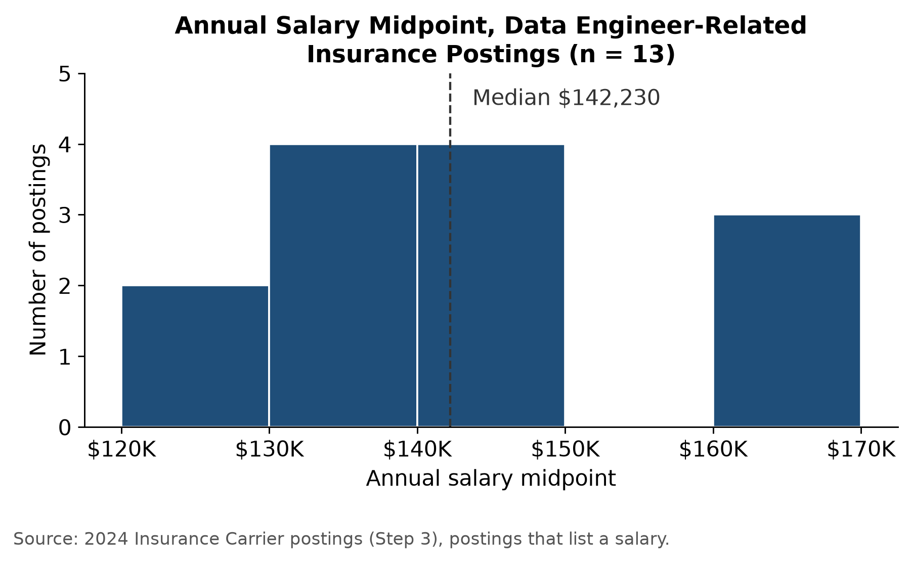
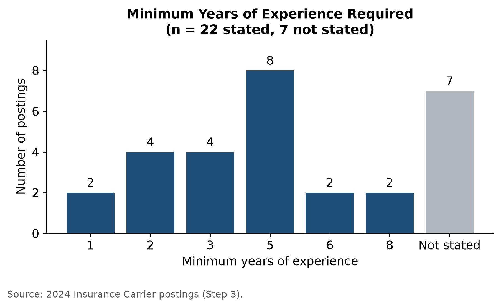
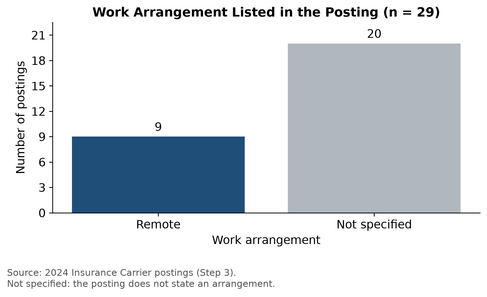

This market baseline examines Data Engineer-related job postings within the Insurance Carrier industry (NAICS 5241). The analysis focuses on job volume, salary, location, experience requirements, work arrangement, hiring patterns, and specialized skills.
It uses the 2024 Insurance Carrier dataset from Step 3 (1,908 postings in total). To match the Skill Gap Analysis page, the dataset was filtered to Data Engineer-related roles: Data Engineering, Analytics Engineer, Data Platform Engineer, ETL Engineer, and Data Warehouse Engineer titles. Every number on this page is calculated from that filtered data.
Load the 2024 Dataset
Show code
# Load the 2024 (Step 3) Insurance datasetdata_path = ( project_root/"outputs"/"step3"/"insurance_5241_all_postings_step3.csv")all_jobs = pd.read_csv(data_path, low_memory=False)# Same Data Engineer-related role filter as the Skill Gap Analysis pagerole_pattern = (r"\bdata engineer\b|"r"\bdata engineering\b|"r"\banalytics engineer\b|"r"\bdata platform engineer\b|"r"\betl (?:developer|engineer)\b|"r"\bdata warehouse (?:developer|engineer)\b")df = all_jobs[ all_jobs["TITLE_CLEAN"] .fillna("") .str.lower() .str.contains(role_pattern, regex=True)].copy()print("Total Insurance postings (2024):", len(all_jobs))print("Data Engineer-related postings:", len(df))
Total Insurance postings (2024): 1908
Data Engineer-related postings: 29
The team identified 29 Data Engineer-related postings from the 2024 Insurance Carrier dataset after applying the project role filter, out of 1,908 postings in total.
TITLE_CLEAN
data analytics engineer 8
data engineer analytics 7
data engineering analyst remote 3
sr analyst data engineer 2
data engineer ii data analytics 2
sr data engineer customer analytics hybrid 2
sr people analytics data engineer 2
data engineering analyst 1
senior data analytics engineer 1
senior data analyst principal data engineer remote 1
Name: count, dtype: int64
The filtered dataset contains 29 postings spread across 10 distinct title variations. The most common title is “data analytics engineer” with 8 postings. Titles are variations of Data Engineer, Analytics Engineer, and Data Engineering Analyst roles.
Postings with salary: 13 of 29
Median annual salary midpoint: 142230
Average annual salary midpoint: 140990
Range: 127000 to 161625
Distinct salary values: 6

Salary information was available for 13 of the 29 postings. The median annual salary midpoint was approximately $142,230, and the average was approximately $140,990. The salary midpoint ranged from approximately $127,000 to $161,625.
Only 6 distinct salary values appear among those 13 postings, so several postings repeat the same salary range. Because salary information was missing for 16 postings and the remaining sample is small, these results should be interpreted cautiously.
Valid state information was available for 29 of the 29 postings, covering 10 states. Texas, Georgia, Wisconsin, and Arizona each had the most postings, with 4 each, together accounting for about 55% of the filtered postings. At the metropolitan-area level, the largest concentrations (4 postings each) were in Dallas-Fort Worth-Arlington, TX, Atlanta-Sandy Springs-Alpharetta, GA, Milwaukee-Waukesha, WI, and Phoenix-Mesa-Chandler, AZ. The state is the location listed on the posting, which may not be where remote work is actually done.
The state ranking largely reflects office footprint rather than hiring demand by state. State Farm supplies 15 of the postings and lists the same roles at its offices in Arizona, Georgia, Illinois, and Texas, so those states rank high mostly because of one employer. In total, the 29 postings are only 13 distinct jobs (see Limitations).
One Travelers posting is listed in Hartford, Wisconsin. The same title, salary, and 8-year experience requirement also appear in a Travelers posting for Hartford, Connecticut, which suggests the Wisconsin label is a location error in the source data. The posting is counted as listed, so Wisconsin’s count of 4 includes it; it was not reassigned.
Experience Requirements
Show code
exp = df["MIN_YEARS_EXPERIENCE"]n_exp =int(exp.notna().sum())exp_median = exp.median()exp_counts = exp.dropna().astype(int).value_counts().sort_index()labels = [f"{y}"for y in exp_counts.index]values =list(exp_counts.values)n_exp_missing = n - n_explabels.append("Not stated")values.append(n_exp_missing)colors = [BLUE] *len(exp_counts) + [GREY]print("Postings with minimum years of experience:", n_exp, "of", n)print("Median minimum years required:", exp_median)fig, ax = plt.subplots(figsize=(7, 4))bars = ax.bar(labels, values, color=colors)ax.bar_label(bars, padding=3, fontsize=12)ax.set_title(f"Minimum Years of Experience Required\n(n = {n_exp} stated, {n_exp_missing} not stated)")ax.set_xlabel("Minimum years of experience")ax.set_ylabel("Number of postings")ax.set_ylim(0, max(values) +1.5)source_note(fig, "Source: 2024 Insurance Carrier postings (Step 3).")plt.tight_layout()plt.show()
Postings with minimum years of experience: 22 of 29
Median minimum years required: 5.0

A minimum experience requirement was stated for 22 of the 29 postings. The typical (median) requirement was 5 years of experience, and requirements ranged from 1 to 8 years. About 55% of the postings that state a requirement (12 of 22) ask for 5 or more years, so these roles lean toward experienced hires. The 7 postings with no stated requirement were kept as missing rather than estimated.
Remote vs. On-Site Work
Show code
remote_raw = df["REMOTE_TYPE_NAME"].replace("[None]", pd.NA)remote_counts = remote_raw.fillna("Not specified").value_counts()n_remote =int(remote_counts.get("Remote", 0))n_remote_unspecified =int(remote_counts.get("Not specified", 0))print(remote_counts)order = [c for c in ["Remote", "Hybrid Remote", "Not Remote", "Not specified"] if c in remote_counts.index]vals = [int(remote_counts[c]) for c in order]cols = [GREY if c =="Not specified"else BLUE for c in order]fig, ax = plt.subplots(figsize=(7, 3.8))bars = ax.bar(order, vals, color=cols)ax.bar_label(bars, padding=3, fontsize=12)ax.set_title(f"Work Arrangement Listed in the Posting (n = {n})")ax.set_xlabel("Work arrangement")ax.set_ylabel("Number of postings")ax.set_ylim(0, max(vals) +2.5)ax.yaxis.set_major_locator(MaxNLocator(integer=True))source_note(fig, "Source: 2024 Insurance Carrier postings (Step 3).\nNot specified: the posting does not state an arrangement.")plt.tight_layout()plt.show()
REMOTE_TYPE_NAME
Not specified 20
Remote 9
Name: count, dtype: int64

The filtered postings included:
9 remote (about 31%)
20 with no work arrangement stated
No postings labeled hybrid or on-site in the work-arrangement field
Remote was the only work arrangement stated for these postings. The remaining postings do not state an arrangement, so they cannot be counted as on-site. 2 of those postings include the word “hybrid” in their job title, which suggests the field understates hybrid work; those postings were not reclassified.
The 29 postings come from only 7 employers. State Farm alone accounts for 15 of them (about 52%), so the sample reflects a small group of large insurers rather than the whole industry.
Top Specialized Skills
Show code
skill_counts = Counter()for cell in df["SPECIALIZED_SKILLS_NAME"].dropna(): skill_counts.update(set(json.loads(cell)))# "Data Engineering" appears in every posting because of the role filterskill_counts.pop("Data Engineering", None)top_skills = pd.Series(dict(skill_counts.most_common(10)))top_skills_pct = (top_skills / n *100).sort_values()print(top_skills_pct.sort_values(ascending=False).round(1))fig, ax = plt.subplots(figsize=(7, 4.8))bars = ax.barh(top_skills_pct.index, top_skills_pct.values, color=BLUE)ax.bar_label(bars, labels=[f"{v:.0f}%"for v in top_skills_pct.values], padding=3, fontsize=12)ax.set_title(f"Top 10 Specialized Skills,\nShare of Postings (n = {n})")ax.set_xlabel("Share of postings mentioning the skill (%)")ax.set_ylabel("")ax.set_xlim(0, 100)source_note(fig, "Source: 2024 Insurance Carrier postings (Step 3), specialized skills field.")plt.tight_layout()plt.show()
Skills information was more complete than salary, experience, and work-arrangement information. “Data Engineering” is left out of the chart because it appears in all 29 postings.
The share for SQL here (18 of 29, 62%) counts only postings tagged with the exact skill “SQL (Programming Language)”. The Skill Gap Analysis page searches all skill columns for any mention of SQL, which also catches Microsoft SQL Servers, and so reports a higher share (22 of 29, 76%). Both figures are correct for the method each page uses.
The strongest specialized-skill signals were:
Python (Programming Language) - 86.2%
Data Analysis - 75.9%
Amazon Web Services - 72.4%
SQL (Programming Language) - 62.1%
Machine Learning - 58.6%
Key Findings and Limitations
The 2024 Insurance sample contained 29 Data Engineer-related postings. Their median annual salary midpoint was approximately $142,230, the most postings were in Texas, Georgia, Wisconsin, and Arizona, the typical minimum experience requirement was 5 years, and 31% of postings stated that the role is remote.
Limitations:
Small salary sample. Salary was listed for only 13 of 29 postings, with 6 distinct salary values, so the salary figures are not representative of the entire Insurance Carrier data-job market.
Duplicate listings. The 29 postings are only 13 distinct jobs, because employers such as State Farm post the same job at several offices. A distinct job here means the same employer, the same title, and the same salary (a missing salary counts as one value). Among the 13 distinct jobs, 8 list a salary, and their median annual salary midpoint is approximately $136,415, compared with $142,230 across all postings. The charts above count every posting.
Few employers. The 29 postings come from 7 employers, and State Farm supplies about 52% of them.
Missing experience and work-arrangement information. Minimum experience was missing for 7 postings and no work arrangement was stated for 20; neither was estimated.
Location is the posting location. Remote roles may be done from anywhere, so state counts show where the posting is listed, not where work must be done.
Skills information was considerably more complete. Python (Programming Language), Data Analysis, Amazon Web Services, and SQL (Programming Language) were among the most frequently identified specialized skills.